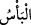

Kendisi için yaratılan varlık (insan) yok edildikten sonra hayvanların sağ olarak geride
hayatta bırakılmasının bir mânâsı yoktur.
“Fakat Allah, onları” kendi katında mâlûm olan “belirtilmiş bir süreye” yâni
kıyâmete “kadar erteliyor. Vakitleri gelince (gerekeni yapar). Kuşkusuz Allah,
kullarını görmektedir.” Onları amellerine göre cezâlandıracaktır. Şayet amelleri iyiyse
karşılığı iyi; amelleri kötüyse karşılığı da kötüdür.
Birini rızâ parıltılarıyla sıvazlar,
Diğerini gazap çığlıklarıyla eritir.
Onun kazâ ve kaderiyle kimsenin işi olmaz.
O’nun yaptığı insanların iyiliği içindir.
Âyette şu hususa da işâret edilmektedir: Her insandan yakalanıp cezâlandırılmasını
gerektiren birtakım suç ve günahlar meydana gelebilir. Ancak Allah Teâlâ kerem ve
rahmetiyle bu kişiye mühlet verir. Sonra cezâya ehil olanı yakalayıp cezalandırır; affa
ehil olanı da affeder. Âyette Allah Teâlâ’nın hilm sahibi ve yumuşak huylu olduğu beyan
edilmekte; kullar da hilm ve yumuşak huylu olmaya teşvik edilmektedir. Zira hilm ve
yumuşak huyluluk, âfetlerin perdesi ve ahlâkın tuzudur.
Ahnef b. Kays, akıl ve hilmiyle öyle efendilik elde etti ki onun emriyle yüzbin kılıç
çekiliyordu. Ülke ve şehirlerin emir ve yöneticileri mühim işlerinde ona ilticâ
ediyorlardı. Hilm sahibi olma ve yumuşak huylulukta kendisi darb-ı mesel olmuştur. Bir
adam kendisine bana murûet ve erdemi yâni “mertlik, cömertlik, olgunluk ve yüksek
karakter sahibi olmayı söyle!” dedi. Ahnef b. Kays ona “güzel ahlaklı, yumuşak huylu
ol; çirkin ahlaktan geri dur,” dedi. Sonra adama “Sana en kötü hastalığı söyleyeyim
mi?” dedi. Adam “evet” deyince Ahnef b. Kays “Faydasız zem, tenkîd ve kötüleme
yapmaktır” dedi. Şu sözler Zemahşerî’nin belağatındandır: “Güçlü, cesur, cömert ve
hilm sahibi olmak Hâtemî ve Ahnefî’dir. Din ve ilim Hanîfî ve Hanefî’dir.” Bu söz de
leffü neşr-i müretteb vardır. Yâni burada sayılan nitelikler yine aynı tertiple adı geçen
zatlara ait özelliklerdir.
“
”, şecâat demektir; cömertliği de ihtivâ eder. Zira şecâat olmadan sehâvet;
cömertlik ve sehâvet olmadan da şecâat olmaz. Çünkü mal, sevimlidir; onu ancak
nefsine galip olan hak ve hayırda harcayabilir. Cûd ve cömertlik ise meşhur Hâtem b.
Abdullah b. Saad et-Tâi’ye mensub bir niteliktir. Hilm yukarıda bahsedilen Ahnef b.
Kays’a mensuptur. Din ise İmam Azam Ebû Hanîfe’nin hocası İbrahim b. Hanîf’e aittir.
İlim de Ebû Hanife’ye mensuptur.
Fıkıh İbn Mesud’un ekin tarlasıdır
Alkame fıkhın harmanıdır
Sonra İbrahim Devvas’tır
Numan b. Sabit fıkhın öğütücüsü, değirmenidir